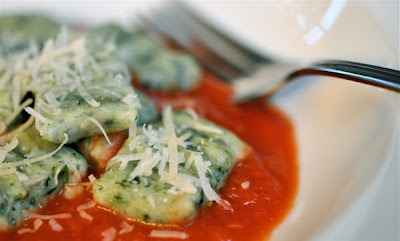
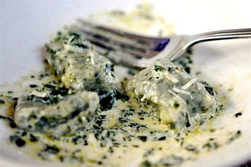

Home
Nettle Gnocchi

Nettle gnocchi is perfect for the long winter. The little greened pillows each glow in your mouth and warm you from the inside. Care should be taken when harvesting the nettles. Soft, young shoots are best harvested in the spring and can be frozen for use at any time of the year.
Gnocchi in general can be tempermental during the preperation phase. It's best to treat directions as guidelines and focus on getting a feeling for the dough. It typically works out okay in the end.
Ingredients
- 2 large Yukon Gold potatoes, boiled and peeled
- 1 egg, lightly beaten
- 1 cup nettles, boiled and chopped
- 1 cup or more flour
- salt to taste
Directions
- Boil nettles for a minute or two to neutralize sting. Remove to cold water. Next wring out excess water. Chop nettles, measure out a cup and then whir in a food processor.
- Cut potatoes in half and boil in salted nettle water until tender, thirty minutes or more. Remove from water one at a time and peel. Break down potatoes with a fork and allow to cool. Make sure to attack lumps but don't over-mash.
- Mix nettles into potatoes by hand, a little at a time.
- Sprinkle a handful of flour over your work space. Pull potato-nettle mixture into a mound on floured surface and make a volcano-like crater. Pour beaten egg into crater and sprinkle 3/4 of the flour over top. Start working the dough with metal spatulas or your hands, adding more flour and folding the dough into itself as you go. I find this step gets messy unless I make sure to use plenty of flour.
- Split the dough into 5 or 6 balls. The dough is ready when you can easily roll out each ball into a long snake. Again, a work surface dusted generously with flour makes this easier. Now cut into pillows.
- Add gnocchi to salted boiling water. (You can re-use your nettle-potato water.) When they float to the surface they're done. Remove with a slotted spoon.
I ate my Nettle Gnocchi with two different sauces. A simple red sauce with grated parm works quite nicely, the acidity of the tomatoes marrying well with the high green note of the nettles.
But even better, in my opinion, is—surprise!—a sweet, herbed cream sauce. I know, my love for the cream sauce seems to know no bounds. Just trust me. For this more decadent preparation, try briefly sauteing fresh chopped herbs from the garden (I used sage, thyme, rosemary, oregano, parsley, and chives) in butter, splashing with a little cognac that bubbles off (but not before leaving a pleasant sweetness), and finishing with heavy cream. Pour over the gnocchi and sprinkle with parmesan. As you can see from my picture below I was in a bit of a hurry to eat this meal. I used half-and-half, which separated somewhat from the butter. Still, it was an amazing lunch.
